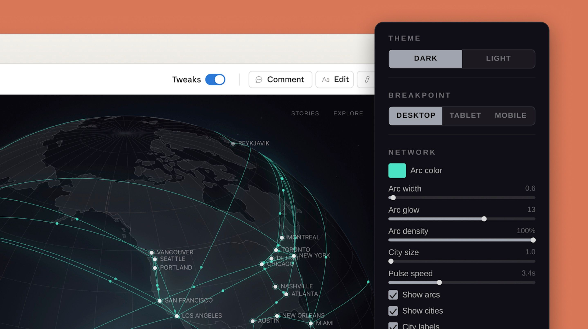
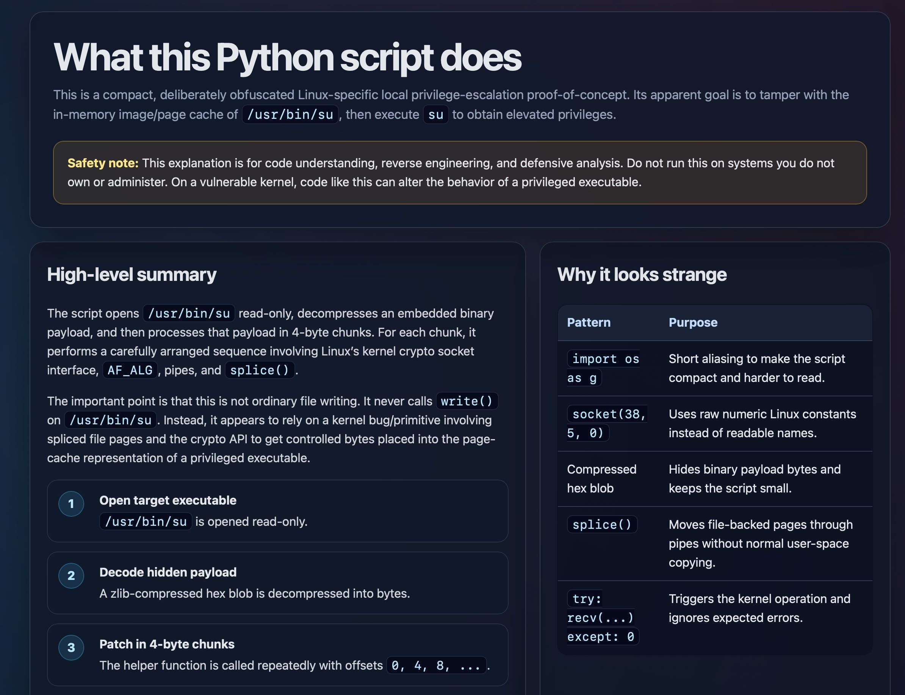

On-Demand Generative User Interface
Recently, Anthropic released Claude Design, a design workspace where you collaborate with Claude through chat, canvas, inline comments, and direct edits. It exports to Canva, PDF, PPTX, or standalone HTML, and supports handoff to Claude Code for implementation. On the surface, it looks like a polished design tool. But the interface is not prebuilt: Claude generates and updates it in real time, adapting the layout to user feedback. It also embeds interactive functionality on demand: download buttons, pagination controls, sliders, whatever the task calls for.
This points to something bigger. Traditional web UI asks the user to adapt to its fixed contours. An agent-native platform reverses this: the surface adapts to the user, strengthening user agency. A task does not always need a fixed product screen designed in advance. It may need a temporary editor, generated for the task and discarded when it ends. What matters is not visual polish alone; it is interaction performance: how quickly a user can understand the state, make a choice, and give feedback. An agent-native platform should treat UI as a material the system can reshape around the user's demand and preference, not as a permanent container locked in months before anyone uses it.

Claude Design happens to use HTML as its primary generated surface, and so do many of the agent-to-interface experiments people are running today. HTML is a natural place to start, but it is only one surface among many.
HTML as One Surface
Markdown is still useful. It is compact, easy for agents to produce, and good for plain explanations. But the final surface is often for a human, not for another agent. HTML is useful because it can carry layout, hierarchy, buttons, forms, SVG, tabs, sliders, and export actions in one familiar runtime.
Simon Willison's note on the "unreasonable effectiveness of HTML" makes the same point from another angle: instead of returning a wall of Markdown, an agent can return a small self-contained page. Thariq Shihipar (Anthropic)'s examples show code reviews, design systems, prototypes, diagrams, research explainers, and custom editors as HTML artifacts. These are not just prettier documents. They show how one agent answer can become a more usable interaction surface.

Agent-Native User Interface
A future agent-native platform may not have one fixed interface. It may have a stable core product logic, plus many task-specific surfaces generated on the fly (In principle, even that core logic could be calibrated by the user, but stability is the key reason to keep it fixed). One user needs a dashboard. Another needs a Canva-like asset picker. A third needs a prompt tuner, a feature-flag editor, or a visual plan. The same app can become many small apps. Every programmer knows this intuitively: some swear by VS Code, others by JetBrains. The difference is never just aesthetic, it is about how the tool maps to the way a person thinks and works. In an agent-native platform, that kind of calibration is not limited to a settings panel. The interface itself can be reshaped to match the user's mental model.
Some product functions feel natural here: temporary control panels for parameter tuning, comparison boards for choosing between generated options, editable previews before handoff, visual review surfaces for comments, task-specific dashboards, and export panels that know the user's next tool. If a generated surface becomes useful repeatedly, the product can promote it into a saved workflow. That is how an agent-native app can evolve without forcing every workflow into the same fixed screen.
The Product Implication
The product lesson is straightforward: agents should optimize not only for correct answers, but for the right interaction surface. That surface might be Markdown. It might be HTML. Increasingly, it may be a small generated workspace made exactly for the user and the task in front of them. None of this means every response should become a webpage. Plain text is still right for many cases, and future surfaces may also be canvas, spreadsheets, forms, simulations, voice, or mixed interfaces. The important question is not "Should this be HTML?" The better question is "What interface does this task need right now?"
Envisioning the Future, the interface can be freely calibrated to fit a user's preferences and habits, rather than asking the user to conform to it. In agent-native applications, on-demand calibrated interface will become a normal product primitive: shaped by user demand, calibrated by user preference, and promoted to a persistent surface when they earn their place.
Further reading: Anthropic announcement, Claude Design guide, Simon Willison, HTML examples.
@misc{zhu2026calibrated,
title = {On-Demand Generative User Interface},
author = {Zhu, Shenzhe},
year = {2026},
month = {5},
url = {https://shenzhezhu.github.io/blog/interfaces-on-demand.html},
note = {Blog post}
}